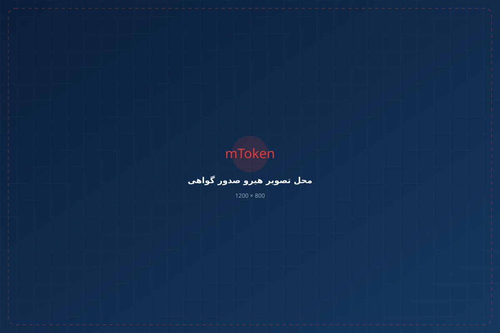
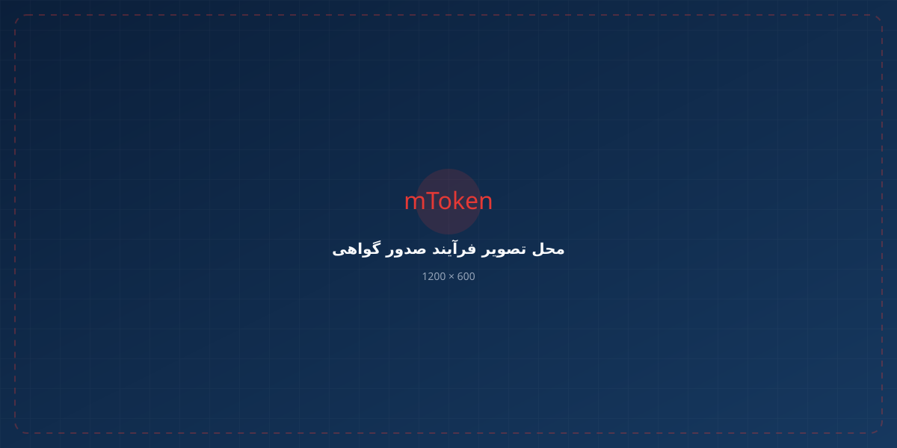
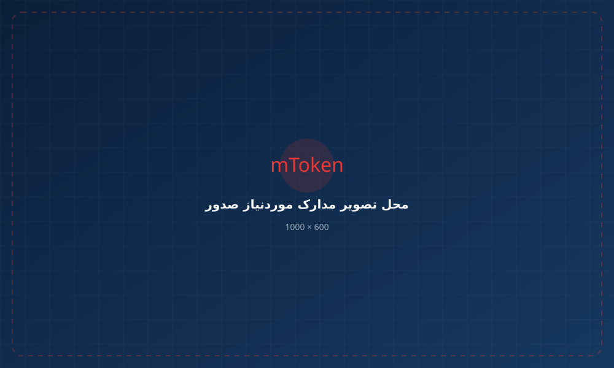

ثبت درخواست، احراز هویت و دریافت گواهی امضای دیجیتال برای استفاده در سامانههای دولتی، تجاری و سازمانی. از انتخاب نوع گواهی تا راهاندازی و استفاده، در کنار شما هستیم.

برای استفاده از خدمات و سامانههایی که نیاز به امضای دیجیتال دارند، ابتدا باید گواهی امضای دیجیتال متناسب با نوع فعالیت و کاربرد خود را دریافت کنید.
در این خدمت، مراحل ثبت درخواست گواهی، احراز هویت، صدور گواهی امضای دیجیتال و راهاندازی آن انجام میشود و در صورت نیاز، کارشناسان ما برای انتخاب نوع گواهی و راهاندازی آن در کنار شما خواهند بود.
فرآیند دریافت گواهی تنها به صدور آن محدود نمیشود. در صورت نیاز، راهنماییهای لازم برای راهاندازی و استفاده از گواهی در اختیار شما قرار میگیرد.
آشنایی با نقش گواهی دیجیتال در فرآیندهای الکترونیکی
گواهی امضای دیجیتال یک گواهی الکترونیکی است که برای ایجاد و استفاده از امضای دیجیتال معتبر در محیطهای الکترونیکی مورد استفاده قرار میگیرد.
با استفاده از گواهی امضای دیجیتال میتوان هویت صاحب گواهی را در فرآیندهای الکترونیکی شناسایی و اسناد و تراکنشهای دیجیتال را با اطمینان بیشتری امضا کرد.
بسیاری از سامانههای دولتی، تجاری و سازمانی برای انجام برخی خدمات الکترونیکی به گواهی امضای دیجیتال نیاز دارند.
گواهی دیجیتال برای گروههای مختلفی از کاربران کاربرد دارد.

افرادی که برای انجام امور شخصی، تجاری یا اداری خود در سامانههای نیازمند امضای دیجیتال فعالیت میکنند.
کارکنان، نمایندگان یا افرادی که به نمایندگی از یک شرکت یا سازمان فرآیندهای الکترونیکی انجام میدهند.
شرکتها و سازمانهایی که برای امور الکترونیکی، ثبت اسناد، معاملات یا سامانههای سازمانی نیاز دارند.
کسبوکارهایی که برای استفاده از خدمات الکترونیکی، سامانههای دولتی و تجاری به گواهی معتبر نیاز دارند.
فرآیند دریافت گواهی شامل چند مرحله اصلی است.

اطلاعات مورد نیاز ثبت و نوع گواهی متناسب با نیاز متقاضی مشخص میشود.
اطلاعات و مدارک مورد نیاز بررسی میشود تا درخواست برای ادامه فرآیند آماده باشد.
هویت متقاضی مطابق فرآیند تعیینشده بررسی و تأیید میشود.
پس از تکمیل مراحل و تأیید اطلاعات، گواهی صادر میشود.
گواهی برای استفاده در سیستم، توکن یا سامانه موردنظر آماده میشود.
نوع گواهی باید بر اساس شخص، وابستگی سازمانی و کاربرد انتخاب شود.
برای اشخاص حقیقی که گواهی را برای استفاده شخصی و مستقل دریافت میکنند.
برای افرادی که گواهی آنها در ارتباط با یک شرکت، سازمان یا مجموعه مشخص صادر میشود.
برای شرکتها و اشخاص حقوقی که برای انجام فرآیندهای الکترونیکی به گواهی معتبر نیاز دارند.
برای سازمانها و شرکتها در فرآیندهایی که نیاز به هویت و مهر الکترونیکی سازمان دارند.
برخی از کاربردهای رایج گواهی دیجیتال
استفاده از روشهای امضای موردنیاز در فرآیندهای مرتبط.
انجام برخی فرآیندهای تجاری و الکترونیکی نیازمند امضا.
استفاده از گواهی در برخی فرآیندهای خدمات ثبتی.
کاربرد امضای دیجیتال در برخی فرآیندهای سامانه.
استفاده از گواهی در فرآیندهای الکترونیکی مرتبط.
برخی فرآیندهای ثبت شرکتها و خدمات ثبتی.
برخی خدمات تجاری و سازمانی نیازمند امضای دیجیتال.
هر سامانهای که زیرساخت امضای دیجیتال را پشتیبانی کند.
این موضوع به نوع گواهی و روش استفاده شما بستگی دارد. در صورتی که استفاده از توکن سختافزاری برای شما موردنیاز باشد، میتوانید توکن امضای دیجیتال K3 را نیز تهیه کنید.
اگر هنوز توکن ندارید، میتوانید همزمان با دریافت خدمات صدور گواهی، توکن موردنیاز خود را تهیه کنید.
مناسب برای نگهداری گواهی دیجیتالاز ثبت درخواست تا راهاندازی و استفاده از گواهی
دریافت گواهی دیجیتال فقط به صدور گواهی محدود نمیشود. در صورت نیاز، در مراحل راهاندازی و استفاده نیز همراه شما خواهیم بود.
پس از دریافت گواهی، در صورت نیاز میتوانید برای نصب نرمافزار، Middleware، درایور، تنظیمات توکن و استفاده از گواهی در سامانهها راهنمایی دریافت کنید.
مدارک مورد نیاز بر اساس نوع گواهی مشخص میشود.
فرآیند دریافت گواهی را شروع کنید یا قبل از ثبت درخواست برای انتخاب نوع گواهی مشاوره بگیرید.